초음파비파괴검사기사(구) (2012-08-26 기출문제)
1과목: 초음파탐상시험원리
1. 음향방출시험(AE)에서 카이저효과(kaiser Effect)란?
- 표면 및 내부의 미크로한 탄성적인 정보를 알고자 할 때 사용되는 물성 값이다.
- 소성변형에서 동일 방향으로 변형을 계속하는 경우, 응력을 제거하면 본래 응력의 크기에 이를 때 까지 AE가 관찰되지 않는 현상이다.
- FRP제 용기에서 주로 관찰되는 현상으로 이미 경험한 응력보다 낮은 응력이 작용한 경우에도 AE가 발생하는 현상이다.
- 시험체 표면에서 누설탄성표면파가 발생되는 현상이다.
(정답률: 알수없음)

2. 초음파탐상시험에 이용되고 있는 초음파의 발생과 수신에 대해 기술한 것으로 옳은 것은?
- 초음파의 발생과 수신에 이용되는 자성재료를 얇게 잘라 낸 것을 탐촉자라 부른다.
- 압전 재료로 대표적인 것은 수정, 티탄산바륨, 지르콘티탄산납계 세라믹 등이 있다.
- 진동자의 양면에 전극을 붙여 직류펄스 전압을 가하면 진동자의 두께에 의해 정해지는 공진주파수로 두께와 직각방향으로 신축진동이 일어나 초음파가 발생한다.
- 탐촉자는 댐핑이 작을수록 분해능이 좋아진다.
(정답률: 알수없음)
3. 수침법에서 초음파가 입사각 12.3° 로 알루미늄에 전달되었다면 알루미늄 내에 존재하는 음파의 종류는? (단, 각 매질 내에서의 음파의 속도는 [보기]와 같다.)
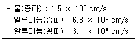
- 종파만 존재한다.
- 횡파만 존재한다.
- 표면파만 존재한다.
- 종파, 횡파 모두 존재한다.
(정답률: 알수없음)
4. 초음파탐상시험시 음압의 비, 에코 높이의 비 등과 같이 2개의 수치의 비를 대수(logarithm)로 압축해 표시하는 단위는?
- dB(decibel)
- Np (nepers)
- λ(ramda)
- G(gain)
(정답률: 알수없음)
5. 종파가 물에서 입사각 10° 로 강(steel)으로 전달될 때 종파 굴절각은 몇 도인가? (단, 물에서의 종파속도는 1500m/s, 강에서의 종파 속도는 5900m/s 이다.)
- 23°
- 43°
- 62°
- 80°
(정답률: 알수없음)
6. 초음파탐상시험에서 접촉매질의 사용 목적이 아닌것은?
- 탐촉자와 시험체의 사이의 공기 제거
- 탐촉자와 시험체의 음향임피던스 조화
- 음향 전달 효율 향상
- 시험속도 증가
(정답률: 알수없음)
7. 결함의 생성 중에는 검출이 용이하지만 결함의 생성이 정지된 상태에서는 검출이 어려운 비파괴검사법은?
- 초음파탐상시험
- 방사선투과시험
- 와전류탐상시험
- 음향방출시험
(정답률: 알수없음)
8. 일반적으로 매 검사마다 소모성 재료비가 가장 많이 소요되는 비파괴검사는?
- X선투과시험
- 와전류탐상시험
- 초음파탐상시험
- X선투시영상시험
(정답률: 알수없음)
9. 초음파탐상시험시 주파수의 선정방법으로 옳은 것은?
- 초음파의 감쇠가 큰 재료에는 높은 주파수를 사용하는 것이 유리하다.
- 작은 결함의 검출에는 높은 주파수를 사용하는 것이 탐상에 유리하다.
- 초음파 빔의 진행거리가 긴 시험체에서는 높은 주파수를 사용하는 것이 유리하다.
- 초음파 빔의 방향에 인접해 있는 두 결함의 검출에는 낮은 주파수를 사용하는 것이 유리하다.
(정답률: 알수없음)
10. 와전류탐상시험의 특징을 설명한 것 중 틀린 것은?
- 시험의 후처리가 필요없다.
- 고온 부위의 시험체에 탐상이 가능하다.
- 시험체에 비접촉으로 탐상이 가능하다.
- 복잡한 형상을 갖는 시험체의 전면 탐상에 능률적이다.
(정답률: 알수없음)
11. 와전류탐상시험으로 탐상하기 가장 어려운 것은?
- 관의 외경 변화
- 관의 표면 균열
- 후판 내부 결함의 자동화검사
- 봉의 랩(lap) 및 심(seam) 검출
(정답률: 알수없음)
12. 침투탐상검사에서 침투에 영향을 미치는 요인을 설명한 것 중 옳은 것은?
- 접촉각 θ가 0° 이면 이상적인 적심성을 갖는다.
- 점성이 낮은 침투액은 점성이 높은 침투액에 비하여 침투속도가 느리다.
- 제한된 범위에서 표면장력이 작을수록 모세관 속에 액체가 높이 올라간다.
- 액체가 모세관 벽을 적시게 되면 모세관 속 액체의 요철면은 오목면이 되고 액체가 상승한다.
(정답률: 알수없음)
13. 자분탐상검사의 검사액(자분현탁액)에 물을 쓰는 주된 이유는?
- 시험체 표면에서 유동성이 좋기 때문이다.
- 기름에 비하여 인화성이 없기 때문이다.
- 기름에 비하여 값이 싸기 때문이다.
- 시험이 끝난 후 시험체로부터 닦아내기 용이하기 때문이다.
(정답률: 알수없음)
14. 내압시험은 고압가스용기와 보일러 등의 내압용기가 사용중의 압력에 잘 견디는지의 여부를 알기 위한 시험이다. 그렇다면 시험압력은 최고사용압력(설계압력)의 몇 배 까지 가압하여야 하는가?
- 0.5 ~ 1.2
- 1.25 ~ 1.5
- 2.0 ~ 3.0
- 3.0 ~ 4.0
(정답률: 알수없음)
15. 방사선을 이용한 비파괴검사 응용 중의 하나로 시험체의 조성 검토에 사용되는 검사법은?
- 방사선 두께 측정법
- 중성자투과검사법
- 양전자 쌍 소멸법
- 미시방사선투과검사법
(정답률: 알수없음)
16. 염색침투검사법이 형광침투검사법에 비해 좋은 점은?
- 검출감도가 좋다.
- 표면이 검은 시험체에 좋다.
- 어두운 곳에서도 검사가 가능하다.
- 현장에서 간편하게 이용할 수 있다.
(정답률: 알수없음)
17. 침투탐상검사의 적용에 관한 설명으로 옳은 것은?
- 다공성 재료나 흡수성 재료 탐상에 적합하다.
- 사용 중인 제품의 표면 피로균열의 검출이 어렵다.
- 자성체의 표면결함을 검출할 경우 자분탐상검사보다 신뢰성이 높다.
- 시험체에 존재하는 표면 불연속의 검출력은 방사선 투과 검사보다 높다.
(정답률: 알수없음)
18. 할로겐누설시험에서 가열양극 할로겐법의 장점을 설명한 것으로 틀린 것은?
- 사용이 간편하고 능률적이다.
- 할로겐 추적가스에만 응답한다.
- 기름에 막혀 있는 누설도 검출할 수 있다.
- 진공상태에서도 일반적인 검출기를 이용하여 시험 할 수 있다.
(정답률: 알수없음)
19. 비파괴검사를 이상적으로 수행하기 위한 전제 조건이 아닌 것은?
- 제작품에 대한 납기를 고려할 것
- 제작의 의해 발생하는 결함의 상황을 알 것
- 피검사장소가 비파괴검사를 적용하는 것이 가능할 것
- 결함이 제품에 미치는 영향에 대한 지식을 보유할 것
(정답률: 알수없음)
20. 비파괴시험의 종류별 특성이 틀리게 짝지어진 것은?
- 방사선투과시험 - X선, γ의 발생
- 초음파탐상시험 - 미세 균열에 감도 높음
- 자분탐상시험 - 교번자장에 의한 자분 흡착
- 침투탐상시험 - 액체의 적심성 영향
(정답률: 알수없음)
2과목: 초음파탐상검사
21. ALCOA Series A Test Block의 구성에 대한 설명중 옳은 것은?
- 표면으로부터 결함까지의 거리는
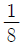
인치부터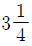
인치까지 8단계로 되어 있다. - 구멍의 직경은
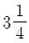
인치로 동일하다. - 표면으로부터 결함까지의 거리는 3인치로 동일하다.
- 구멍의 직경은
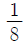
인치로 동일하며 표면으로부터 결함까지의 거리는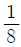
인치에서부터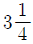
인치까지 8단계로 되어 있다.
(정답률: 알수없음)
22. 다음 중 압연 철판의 적층(lamination) 검사시 음파의 입사면과 반대편 저면이 평행상태를 이루지 못할 경우 파생되는 효과로 생각되는 것은?
- 장비의 음극선관 화면에 저면반사를 얻지 못하는 경우가 생긴다.
- 입사면과 평행한 적층의 검출이 어려워진다.
- 초음파의 침투력이 증가한다.
- 초음파 침투력은 감소하나 분해능이 좋아진다.
(정답률: 알수없음)
23. 철판 두께가 30mm인 용접부를 굴절각이 60° 인 경사각 탐촉자로 검사하는데 CRT거리(w) 80mm에서 결함파를 검출하였다. 표면에서의 결함까지의 깊이(dmm)와 탐촉자 입사점으로부터의 결함까지의 거리(ymm)는?
- d = 20, y = 70
- d = 20, y = 160
- d = 25, y = 70
- d = 25, y = 160
(정답률: 알수없음)
24. 용접부의 초음파 경사각탐사응로 결함을 대략적으로 추정하는 방법으로 옳은 것은?
- 단일기공은 진자주사를 하면 결함에코 높이가 급격히 변한다.
- 단일기공은 목돌림주사를 하여도 결함에코 높이가 변하지 않는다.
- 용입부족은 진자주사를 하면 결함에코 높이가 급격히 변한다.
- 용입부족은 목돌림주사를 하여도 결함에코 높이가 변하지 않는다.
(정답률: 알수없음)
25. 초음파탐상검사가 방사선투과검사에 비하여 장점이라고 할 수 없는 것은?
- 물속의 이물질 검사에 좋다.
- 크기가 작은 용합불량과 같은 결함의 검출에 좋다.
- 슬래그 개재물의 검출이 우수하다.
- “X” 형 개선부 루트부의 용입부족의 검출이 좋다.
(정답률: 알수없음)
26. 용접부의 두께가 작고 용접비드의 폭이 넓어 직사법에 의한 탐상이 불가능한 경우 조치사항으로 틀린것은?
- 방사선투과검사 등 다른 방법으로 검사한다.
- 불가피한 경우이므로 1회 반사법으로만 검사한다.
- 용접부를 평평하게 그라인딩한 후 수직탐상도 병용 한다.
- 책임기술자에게 보고한 후 지시에 따른다.
(정답률: 알수없음)
27. 초음파탐상검사에서 석출된 결정 입계의 탄화물은 초음파의 산란 감쇠를 증가시킨다. 그러나 일반적으로 탄화물 층의 크기가 파장의 약 얼마 이하가 되면 탐상에 큰 영향을 주지 않는가?
- 1/2
- 1/4
- 1/10
- 1/100
(정답률: 알수없음)
28. 초음파탐상시험에 대한 결함깊이, 결함높이의 설명으로 옳은 것은?
- 결함깊이는 탐상면으로부터의 결함위치이다.
- 결함깊이는 결함의 판두께 방향의 치수를 말한다.
- 결함높이는 결함의 판두께에 평행한 방향의 치수를 말한다.
- 결함높이는 에코높이 구분선의 영역을 나타낸다.
(정답률: 알수없음)
29. 초음파탐상검사의 수침법에 대한 설명으로 틀린것은?
- 직접 접촉법보다 에코변화나 표면상태에 덜 영향을 받는다.
- 접촉매질이 연속적으로 공급된다.
- 정밀시험이므로 시험속도가 상대적으로 느려진다.
- 시험물 형상에 따른 탐촉자 전면에 특수한 슈(shoe)를 부착할 필요가 없다.
(정답률: 알수없음)
30. 경사각탐촉자를 사용하여 강용접부를 두갈래 주사 법으로 탐상하고자 한다. 이때 두갈래 주사각은 몇 도로 함이 좋은가?
- 50 - 70°
- 60 - 90°
- 90 - 120°
- 30 - 80°
(정답률: 알수없음)
31. 하나의 탐촉자 내에 수십 개의 진동자를 집적하여 배열하여 빠른 속도로 스캔할 수 있는 초음파 시험 방법은?
- 위상 배열 초음파탐상법(Phased array ultrasonic method)
- 전자초음파법(electro-magnetic acoustic transducer : EMAT)
- 초음파현미경(scanning acoustic microscope : SAM)
- TOFD(Timd of flight diffraction method)
(정답률: 알수없음)
32. 결함의 크기를 측정하는 방법 중의 하나인 6dB-drop법의 설명으로 잘못된 것은?
- 최대에코의 높이에서 1/2로 줄어드는 에코를 찾는 다.
- 결함이 초음파 빔의 폭보다 작을 때에 정밀하게 측정된다.
- 초음파빔 폭의 반이 결함에 걸쳐지는 것을 이용한다.
- 사각 및 수직탐상 모두에 적용할 수 있다.
(정답률: 알수없음)
33. 표준시험편의 곡률반경 100mm되는 사분원의 원 점에 있는 폭 0.5mm, 깊이 2mm의 노치가 없다면 무엇을 조정하기 어려운가?
- 거리보정이 어렵다.
- 굴절각 측정이 어렵다.
- 감도 설정이 어렵다.
- 분해능 측정이 어렵다.
(정답률: 알수없음)
34. 다음의 초음파탐상검사 방법 중 비접촉식에 해당되지 않는 것은?
- 전자초음파법(electro-magnetic acoustic transducer)
- Dry couplant 탐촉자에 의한 방법
- 레이저를 이용하는 방법
- 크리핑파(creeping wave) 법
(정답률: 알수없음)
35. 수침법에 의하여 수직탐상으로 두께 80mm인 황동판을 검사하려고 한다. 물거리는 최소 얼마보다 커야 하는가? (단, 물에서의 종파속도는 1.5km/sec, 황동에서의 종파속도는 4km/sec, 황동에서의 횡파속도는 2km/sec)
- 10mm
- 20mm
- 30mm
- 60mm
(정답률: 알수없음)
36. 초음파탐상시 결함지시길이 측정을 dB drop법으로 하였을 때의 특징으로 옳은 것은?
- 자동화가 용이하다.
- 에코 높이의 영향을 비교적 많이 받는다.
- 전이 손실이나 감쇠의 영향을 크게 받지 않는다.
- 탐상 결과는 탐상자의 개인차가 발생할 수 없다.
(정답률: 알수없음)
37. 초음파 탐촉자에 사용되는 압전재료 중 수신효율이 가장 우수한 것은?
- 지로콘티 탄산(Lead Zirconate Titanate : PZT 5)
- 티탄산 바리움(Barium Titanate : BaTi)
- 황산리튬(Lithium Sulfate Hydrate : LSH)
- 니오비움산 납(Lead Metaniobate : PMN)
(정답률: 알수없음)
38. 단조품에 대한 수직탐상시 저면에코 방법으로 탐상감도를 설정할 경우의 장점이 아닌 것은?
- 표면거칠기를 보정하지 않아도 된다.
- 시험체 곡률을 보정하지 않아도 된다.
- 시험체 형상에 구애받지 않는다.
- 시험편 방식에 비하여 감도설정이 쉽다.
(정답률: 알수없음)
39. 진동자의 진동수를 감소시켜 분해능을 향상시키고자 탐촉자에 사용하는 재료는?
- 댐핑재
- 쐐기
- 흡음재
- 수정
(정답률: 알수없음)
40. 경사각탐촉자로 용접부 검사시 용접선에 수직방향으로 초음파가 입사했을 때 가장 큰 에코높이를 나타내고, 결함을 중심으로 진자주사를 했더니 급격히 에코높이가 감소되었다면 어떤 결함이 추정되는가?
- 기공
- 슬래그
- 융합불량
- 라미네이션
(정답률: 알수없음)
3과목: 초음파탐상관련규격및컴퓨터활용
41. 강용접부의 초음파탐상 시험방법(KS B 0896)에 따라, 동일하다고 간주되는 깊이에서 흠과 흠의 간격이 큰쪽의 흠의 지시길이와 같거나 그것보다 짧은 경우는 어떻게 분류하는가?
- 독립 결함으로 긴 쪽 길이를 기준한다.
- 독립 결함으로 짧은 쪽 길이를 기준한다.
- 각각의 흠군으로 간주하고, 그것들을 각각의 흠으로 나누어 흠을 분류한다.
- 동일한 흠군으로 간주하고, 그것들을 간격까지 포함시켜 연속한 흠으로 간주한다.
(정답률: 알수없음)
42. 강용접부의 초음파탐상 시험방법(KS B 0896)에 따라 경사각 탐촉자의 성능 점검 시기가 구입 및 보수를 한 직후가 아닌 것은?
- 빔 중심축의 치우침
- A1감도
- 접근한계길이
- 원거리 분해능
(정답률: 알수없음)
43. 강용접부의 초음파탐상 시험방법(KS B 0896)에 의한 경사각 탐상에서 초음파 탐상장치의 점검 항목과 사용 표준시험편이 잘못 짝지어진 것은?
- 입사점의 측정 : STB-A3
- 측정 범위의 조정 : STB-A1
- 에코 높이 구분선 작성 : STB-A3
- STB 굴절각의 측정 : STB-A1
(정답률: 알수없음)
44. 압력용기용 강판의 초음파탐상 검사방법(KS D 0233)에서 이진동자 수직탐촉자에 의한 Y주사 탐상시 결함분류와 표시기호가 옳은 것은?
- DC선 이하 : Δ
- DC선을 넘고 DL선 이하 : Δ
- DL선을 넘고 DM선 이하 : Δ
- DM선을 넘는 것 : Δ
(정답률: 알수없음)
45. 보일러 및 압력용기의 재료에 대한 초음파탐상검사(ASME Sec.V Art.5)에 의해 주조품을 수직빔으로 시험하는 경우 주조품의 전면과 후면간의 각이 몇 도를 초과하면 추가로 경사각빔 시험을 수행해야 하는가?
- 5°
- 10°
- 15°
- 20°
(정답률: 알수없음)
46. 보일러 및 압력용기에 대한 표준초음파탐상검사(ASME Sec.V, Art.23 SE-114)에서 시험체의 표면거칠기가 6.4 ~ 18 μm일 때 이 규정에 맞는 접촉매질은 무엇인가?
- SAE 10 기계유
- SAE 20 기계유
- SAE 30 기계유
- SAE 40 기계유
(정답률: 알수없음)
47. 보일러 및 압력용기에 대한 초음파탐상검사(ASME Sec.V Art.4)에서 검교정으로 확인한 경우를 제외했을 때 다음 중 탐촉자 이동속도로 옳은 것은?
- 76mm/s 를 초과할 수 없다.
- 152mm/s 를 초과할 수 없다.
- 254mm/s 를 초과할 수 없다.
- 3048mm/s 를 초과할 수 없다.
(정답률: 알수없음)
48. 보일러 및 압력용기에 대한 표준초음파탐상검사(ASME Sec.V, Art.23 SA-435)에서 강판의 수직빔 탐상 적용재료로 옳은 것은?
- 두께 10mm 이상인 특수용 클래드 강판 및 합금가안
- 두께 10mm 이상인 특수용 압연된 탄소강판 및 합금강판
- 두께 6.25mm 이상인 압연된 완전 킬드 탄소강판 및 합금강판
- 두께 12.5mm 이상인 압연된 완전 킬드 탄소강판 및 합금강판
(정답률: 알수없음)
49. 보일러 및 압력용기에 대한 재료의 초음파탐상검사(ASME Sec.V Art.5)에 따라 시험절차서를 작성하고자 할 때 절차서에 반드시 포함되어야 할 사항이 아닌것은?
- 탐촉자 주파수
- 검사체의 두께 및 크기
- 교정에 사용된 시험편
- 검사체의 허용온도 범위
(정답률: 알수없음)
50. 보일러 및 압력용기에 대한 표준초음파탐상검사(ASME Sec.V, Art.23 SA-388)에 따른 시험 방법으로 옳은 것은?
- 단강품 체적의 전체 범위를 확인하기 위하여 각 패스(pass)마다 탐촉자를 15% 중첩하여 탐상한다.
- 주사속도는 180mm/s로 시행한다.
- 제조자 또는 구매자가 재시험하거나 재평가할 때는 교정용 장비를 이용하여 탐상한다.
- 원판형 단강품은 최소한 양쪽 평면에서 경사각 70°의 빔을 사용하여 주사한다.
(정답률: 알수없음)
51. 강용접부의 초음파탐상 시험방법(KS B 0896)으로 상온(10~30℃)에서 시험부위를 경사각탐상 할 때 굴절각 70° 인 경사각 탐촉자의 실제 굴절각을 점검하였다. 다음 중 탐상검사에 사용해서는 안되는 탐촉자의 굴절각은?
- 68.5°
- 71°
- 71.5°
- 72.5°
(정답률: 알수없음)
52. 금속재료의 펄스반사법에 따른 초음파탐상 시험방법 통칙(KS B 0817)에는 탐상도형의 기본기호를 규정하고 있다. 다음 중 기호와 설명이 틀리게 연결된 것은?
- T : 송신펄스
- S : 표면에코
- B : 흠집에코
- W : 측면에코
(정답률: 알수없음)
53. 보일러 및 압력용기에 대한 초음파탐상검사(ASME Sec.V Art.4)에 따른 장치 요건의 설명으로 틀린 것은?
- 시험의 감도가 떨어진다면 댐핑(damping) 조정기가 내장된 것을 사용한다.
- 펄스-에코 방식의 초음파 탐상장치를 사용해야 한다.
- 이득(gain)조정기는 2.0dB 이하의 단계로 조정되어야 한다.
- 장치는 최소한 1MHz~5MHz 범위의 주파수에서 작동해야 한다.
(정답률: 알수없음)
54. 강용접부의 초음파탐상 시험방법(KS B 0896)에서 RB-A6, RB-A8 시험편 제작시 대비 시험편의 곡률 반지름은 시험체 곡률 반지름의 몇 배인가?
- 0.9배 이하
- 1.5배 이상
- 0.9배 이상 1.5배 이하
- 2/3배 이상 1.5배 이하
(정답률: 알수없음)
55. 보일러 및 압력용기의 재료에 대한 초음파탐상검사(ASME Sec.V Art.5)의 장비 직선성 점검 주기로 옳은 것은?
- 3개월 이하
- 2년 이하
- 6개월 이하
- 5년 이하
(정답률: 알수없음)
56. 보일러 및 압력용기에 대한 표준초음파탐상검사(ASME Sec.V.Art.23 SA-388)에 따라 오스테나이트 스테인리스의 단강품을 초음파 탐상검사로 결함을 검출하는데 가장 효과적인 주파수는?
- 1 MHz
- 2.25 MHz
- 5 MHz
- 10 MHz
(정답률: 알수없음)
57. 보일러 및 압력용기에 대한 표준초음파탐상검사(ASME Sec, Art.23 SB-548)에서 수침법으로 검사할 때 탐촉자와 시험체 사이의 거리의 허용변동 범위는?
- ±25.4mm
- ±12.7mm
- ±6.4mm
- ±3.2mm
(정답률: 알수없음)
58. 건축용 강판 및 평강의 초음파탐상시험에 따른 등급분류와 판정 기준(KS D 0040)에서 규정한 결함분류 중 틀린 것은?
- 수직탐촉자를 사용한 경우 50% ＜ F ≤ 100%일 때는 표시 기호가 Δ이다.
- 수직탐촉자를 사용한 경우 B1≤ 50%일 때는 표시 기호가 X이다.
- 2진동자 수직탐촉자를 사용한 경우 DM선을 초과한 것은 표시 기호가 X이다.
- 2진동자 수직탐촉자를 사용한 경우 DL선 초과 DM선 이하일 경우 표시 기호가 O이다.
(정답률: 알수없음)
59. 두께가 18mm 이하인 용접부를 탐상한 결과 L검출레벨 Ⅱ와 Ⅲ에서 5mm 흠의 지시길이가 검출되었다. 강용접부의 초음파탐상 시험방법(KS B 0896)에 따라 탐상결과를 분류한다면 어디에 해당되겠는가?
- 1류
- 2류
- 3류
- 4류
(정답률: 알수없음)
60. 보일러 및 압력용기에 대한 초음파탐상검사(ASME Sec.V Art.4)에는 니켈합금에 사용하는 접촉매질은 몇 ppm 이상의 황(S)을 제한하고 있는가?
- 5
- 50
- 150
- 250
(정답률: 알수없음)
4과목: 금속재료학
61. 탄소강에서 Mn의 영향이 아닌 것은?
- 경화능을 크게 한다.
- 고온에서 결정립의 성장을 억제한다.
- 편석을 일으키고 상온 취성의 원인이 된다.
- 강의 점성을 증가시키고 고온 가공을 쉽게 한다.
(정답률: 알수없음)
62. 2원계 합금 중에서 대표적인 초소성(super plastic)합금은?
- Zn - 22%Al 합금
- W - 22%Zn 합금
- Ag - 22%S 합금
- Cu - 22%Ti 합금
(정답률: 알수없음)
63. 표점거리 100mm인 인장시험편의 연신율이 30% 였을 때 늘어난 길이는 몇 mm 인가?
- 10
- 20
- 30
- 40
(정답률: 알수없음)
64. 목적원소를 이온화하여 정전(靜電)적으로 가속해서 고체 중에 도입함으로써 표면근방(약100m까지)이 연속적이면서 선택적으로 조성이 변화하며, 반도체의 실리콘 도핑 등에 이용되는 표면개질처리는?
- 스퍼터(Suptter)법
- 이온플레이팅(Ion plating)법
- 플라즈마(Plasma) CVD 법
- 이온 주입(Ion implantation)법
(정답률: 알수없음)
65. 소성변형의 가공방법을 설명한 것 중 틀린 것은?
- 압연가공 : 회전하는 Roll 사이에 소재를 통과시켜 성형
- 인발가공 : 괴상의 소재를 고온에서 가압하여 성형
- 프레스가공 : 판재를 펀치와 다이 사이에 압축하여 성형
- 압출가공 : 다이를 통하여 금속을 밀어내어 균일한 단면을 갖는 제품을 성형
(정답률: 알수없음)
66. Ti 합금의 기본이 되는 합금형이 아닌 것은?
- α형
- β형
- η형
- (α+β)형
(정답률: 알수없음)
67. 용융점이 높아 용해가 곤란하여 주로 분말 야금법으로 성형하는 금속으로 고속도강의 첨가 원소로도 사용되는 것은?
- W
- Ag
- Au
- Cu
(정답률: 알수없음)
68. Fe-C 평형 상태도에서 공정점의 자유도는? (단, 압력은 일정하다.)
- 0
- 1
- 2
- 3
(정답률: 알수없음)
69. 탄소강의 열처리 과정에서 용적의 변화가 가장 심한 조직은?
- 펄라이트
- 소르바이트
- 마텐자이트
- 오스테나이트
(정답률: 알수없음)
70. 침탄처리 후 1차 및 2차 담금질을 실시한다. 이때 1차 담금질하는 목적으로 옳은 것은?
- 표면층을 미세화하기 위하여
- 중심부 조직을 미세화하기 위하여
- 변형을 줄이고 깊은 침탄층을 얻기 위하여
- 중심부와 표면층의 높은 강도와 경도를 얻기 위하여
(정답률: 알수없음)
71. 2원계 상태도에서 포정 반응을 설명한 것 중 옳은 것은?
- 하나의 융체로부터 2개의 고체상이 정출되는 반응이다.
- 두 개의 융체로부터 하나의 고체상이 정출되는 반응이다.
- 하나의 결정상으로부터 두 개의 새로운 결정상이 석출하는 반응이다.
- 하나의 융체와 하나의 결정상이 반응하여 다른 결정사이 정출되는 반응이다.
(정답률: 알수없음)
72. Cu - Pb 계로 고속, 고하중에 적합한 베어링용 합금의 명칭은?
- 켈멧(Kelmet)
- 크로멜(Chromel)
- 슈퍼인바(Superinvar)
- 백 메탈(Back metal)
(정답률: 알수없음)
73. 비처 합금 주물의 편석 현상 중 주물 각부의 온도차 때문에 생기는 편석 현상은?
- 정편석(正偏析)
- 열편석(熱偏析)
- 중력편석(重力偏析)
- 역편석(逆偏析)
(정답률: 알수없음)
74. Cr계 스테인리스강에서 42~48%Cr 범위에 금속간 화합물의 석출로 인하여 재료가 취화하는 현상은?
- σ취성
- 고온취성
- 저온취성
- 475℃ 취성
(정답률: 알수없음)
75. 열처리에서 질량효과(Mass effect)에 대한 설명으로 옳은 것은?
- 가열시간의 차이에 따라 재료의 내ㆍ외부가 뒤틀리는 현상이다.
- 재료의 크기에 따라 담금질 효과가 다르게 나타나는 현상이다.
- 시효처리의 일종으로서 재료가 크면 내부의 경도가 외부 경도에 비해 떨어지는 현상이다.
- 뜨임현상의 일종으로서 뜨임 시간이 길어지면 재료 내ㆍ외부에 경도가 달라지는 현상이다.
(정답률: 알수없음)
76. 청동에 관한 설명 중 틀린 것은?
- 주석청동의 α고용체는 결정편석 때문에 농도가 틀려져 유심조직을 나타낸다.
- 스프링용 인청동은 7~8%Sn, 0.⑤~0.15%P 정도의 합금이 실용화되고 있다.
- 인청동을 용해 주조할 때 합금 중에 인을 0.⑤~0.15%P 남게 하면 용탕의 유동성이 향상된다.
- 니켈청동에서 δ상이 석출하는 과정에 연화하는 현상이 나타난다.
(정답률: 알수없음)
77. 공구강이 구비해야할 조건을 설명한 것 중 틀린것은?
- 피삭성이 좋아야 한다.
- 열처리 변형이 적어야 한다.
- 인성이 커서 충격에 잘 견디어야 한다.
- 고온경도가 낮고, 마모성이 커야한다.
(정답률: 알수없음)
78. 스텔라이트(stellite)의 합금 조성으로 옳은 것은?
- WC-Co계 합금
- Co-Cr-W-C 계 합금
- W-C-Nb-Mn계 합금
- Ti-Mo-W-Pb계 합금
(정답률: 알수없음)
79. 구상흑연 주철에 대한 설명으로 옳은 것은?
- 인장강도는 약 20kgf/mm2 이하이다.
- 주조상태에서 흑연이 구상으로 정출한다.
- 피로한도는 회주철에 비해 1.5 ~ 2.0배 낮다.
- 구상흑연주철의 기지 조직은 펄라이트만 존재한다.
(정답률: 알수없음)
80. 마그네슘(Mg)에 관한 설명으로 틀린 것은?
- 비중이 약 1.74로 가볍다.
- 열전도도는 Cu, Al보다 낮다.
- 원료로는 보오크사이트, 헤마타이트 등이다.
- 알칼리에는 잘 견디나 산이나 염기에는 침식된다.
(정답률: 알수없음)
5과목: 용접일반
81. 용접법의 분류에서 저항 용접에 해당하는 것은?
- 심 용접
- 테르밋 용접
- 스터드 용접
- 가스 납땜
(정답률: 알수없음)
82. TIG 용접에서 토치의 노즐(nozzle)을 통하여 분출되는 아르곤 가스의 속도는 약 몇 m/s 정도이어야 가장 적합한가?
- 0.5 ~ 2
- 2 ~ 3
- 5 ~ 8
- 9 ~ 10
(정답률: 알수없음)
83. 용접 금속부의 피닝(peening)의 목적에 해당하지않는 것은?
- 잔류응력의 완화
- 용접변형의 경감
- 용접부의 연성 증가
- 용착금속의 균열 방지
(정답률: 알수없음)
84. 연강용 가스 용접봉의 성분 중 유황(S)이 모재에 미치는 영향으로 올바른 것은?
- 강의 강도를 증가시키나 연신율, 굽힘성 등이 감소된다.
- 기공은 막을 수 있으나 강도가 떨어진다.
- 강에 취성을 주며 가연성을 잃게 한다.
- 용접부의 저항력을 감소시키고 기공의 발생이 쉽다.
(정답률: 알수없음)
85. 다음 중 심 용접의 통전 방법이 아닌 것은?
- 단속 통전법
- 연속 통전법
- 맥동 통전법
- 축 통전법
(정답률: 알수없음)
86. 직류 아크 용접시 두 전극 사이의 아크 전압 분포를 나타내는 식으로 올바른 것은?(단, Va : 아크 전압, VA : 양극 전압 강하,Vk : 음극 전압 강하, Vp: 아크 기둥 전압 강하)
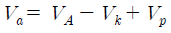
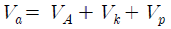
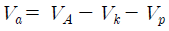
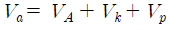
(정답률: 알수없음)
87. 핫 스타트 장치(hot start)의 장점에 해당하지 않는 것은?
- 비드 모양을 개선한다.
- 기공을 방지한다.
- 아크 손실이 적어 용접이 쉽다.
- 아크 발생 초기의 용입을 양호하게 한다.
(정답률: 알수없음)
88. 용해 아세틸렌가스 병 전체의 무게가 50kgf이고, 사용 후 빈병의 무게가 45kgf이라면 15℃, 1기압 하에서 충전된 아세틸렌 가스의 용적은 약 몇 L 인가?
- 3525
- 3725
- 4525
- 4725
(정답률: 알수없음)
89. 용접부의 취성파괴에 대한 일반적인 특징 설명으로 틀린 것은?
- 거시적 파단상황은 판 표면에 거의 수직으로 발생한다.
- 항복점 이하의 평균응력에서도 발생한다.
- 온도가 높을수록 발생하기 쉽다.
- 취성파괴의 기점은 응력과 변형이 집중하는 부분에서 발생하기 쉽다.
(정답률: 알수없음)
90. 아크 전압 30V, 아크 전류 300A, 용접속도 10cm/min로 용접시 발생하는 용접 입열은 몇 Joule/cm 인가?
- 18000
- 24000
- 36000
- 54000
(정답률: 알수없음)
91. 다음 그림에 나타나는 심(seam) 용접의 종류는?
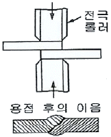
- 맞대기 심 용접(butt seam welding)
- 매시 심 용접(mash seam welding)
- 포일 심 용접(foil seam welding)
- 맥동 심 용접(pulsation seam welding)
(정답률: 알수없음)
92. 용접결함의 발생 원인 중 용접사에 의한 원인이라 볼 수 없는 것은?
- 언더컷(under cut)
- 크레이터 균열(crater crack)
- 라미네이션 균열(lamination crack)
- 아크 스트라이크(arc strike)
(정답률: 알수없음)
93. 가스용접에서 연강용 용접봉의 설명으로 틀린 것은?
- 가능한 모재와 같은 재질이어야 한다.
- 용융온도는 모재보다 약간 낮은 것이 좋다.
- SR은 625±25℃에서 1시간 동안 응력을 제거한 것을 뜻한다.
- 인(P)의 성분은 강에 취성을 주며 가연성을 잃게 하는 원인이 된다.
(정답률: 알수없음)
94. 직류 아크 용접기의 극성에서 정극성과 비교한 역극성의 설명으로 올바른 것은?
- 용접봉을 음극에 연결한다.
- 모재의 용입이 깊다.
- 용접봉의 용융속도가 빠르다.
- 비드의 폭이 좁다.
(정답률: 알수없음)
95. 전류가 높고 아크 길이가 특히 긴 경우에 발생하며 용접금소의 비산에 의한 용접봉의 손실을 초래하는 결함은?
- 기공
- 오버 랩
- 용입 불량
- 스패터
(정답률: 알수없음)
96. 연납땜과 경납땜을 구분하는 융점은?
- 350℃
- 400℃
- 450℃
- 500℃
(정답률: 알수없음)
97. TIG 용접에서 직류 전원을 사용하여 용접을 할 때 나타나는 현상에 대한 설명으로 틀린 것은?
- 정극성에서 전자는 전극에서 모재쪽으로 흐른다.
- 역극성에서 용접하면 아크의 자기 제어가 나타난다.
- 정극성으로 접속하면 비드 폭이 좁고 용입이 깊어진다.
- 역극성으로 접속하면 전극 끝이 과열되어 용융되는 경향이 있다.
(정답률: 알수없음)
98. 용접부의 열영향으로 인한 내부균열로서 모서리 이음, T 이음 등에서 볼 수 있는 것으로 모재 표면과 평행하게 층상으로 발생하는 균열은?
- 설퍼 균열
- 루트 균열
- 토 균열
- 라미네이션 균열
(정답률: 알수없음)
99. 용접부에서 발생하는 비틀림 변형을 줄이기 위한 시공상의 주의사항으로 잘못된 것은?
- 용접시 적당한 지그를 활용할 것
- 용접부에 집중 용접을 피할 것
- 이음부의 맞춤을 정확하게 할 것
- 용접순서는 구속이 작은 부분부터 용접할 것
(정답률: 알수없음)
100. 경납땜에 사용되는 용제는?
- 염산
- 붕산
- 염화암모니아
- 염화아연
(정답률: 알수없음)